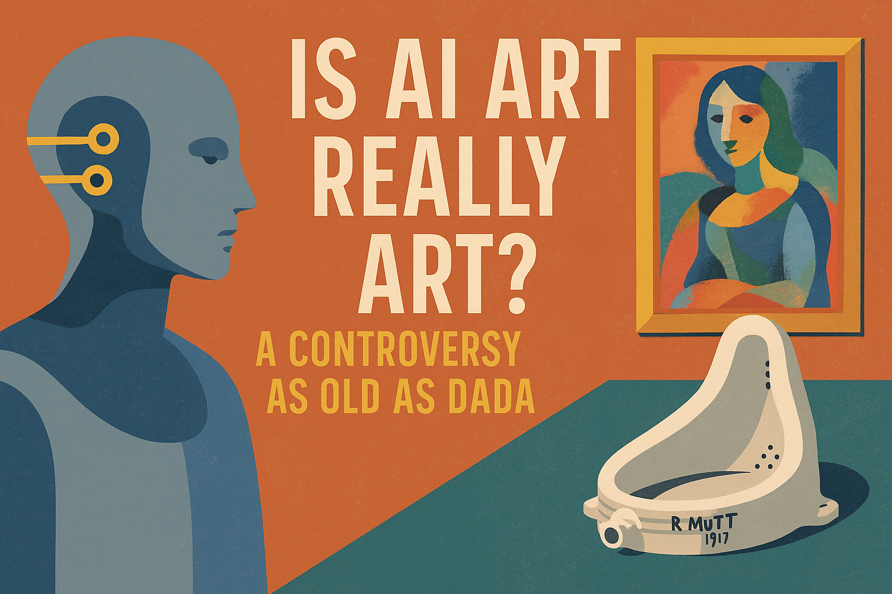

Is AI Art the New Dada?
Posted on April 13, 2025
AI-generated art is everywhere now. On album covers, in ad campaigns, across social media timelines. For some, it's an exciting opportunity to explore an undiscovered creative side. For others, it's a threat. The question that keeps echoing through the digital galleries and online debates isn't just "Is it good?" or "Is it ethical?" But something much deeper: Is it even art?
This is not remotely the first time humans have asked this question.
Back in 1917, Marcel Duchamp submitted a urinal signed "R. Mutt" to an art exhibition and called it Fountain. It was rejected, but it broke the art world open. That was Dadaism: an anti-art movement born out of war, disappointment, and rebellion. It wasn’t just strange, it was a direct challenge to what art was even supposed to be.
And just like AI, Dada made people mad, because it challenged the rules.
Today, AI-generated images evoke a similar anger. Artists argue it’s not real art because it lacks human touch, intent, or emotion. Many point to the ethical concerns, massive datasets trained on human-made art without permission, and the fear that automation will replace working artists.
But the counterargument is just as strong: tools have always shaped art. From the printing press to Photoshop, every new medium has raised eyebrows. A paintbrush doesn’t make you an artist, but it doesn’t stop you from being one either.
AI doesn’t kill creativity. People do.

There’s no denying that AI simplifies parts of the creative process. It can generate ten concepts in seconds. It can remix, stylize, and iterate with inhuman speed. Parts of the professional artist landscape will never be the same.
But let’s be clear: true artists aren’t going anywhere. The ones with skill, originality, taste, and vision will always find ways to push the envelope, often using AI itself as a tool to go even further. Just like the Dadaists found new forms of expression in the absurd, the artists of today are already bending AI into new directions it was never meant to go.
So is AI art good or bad? Maybe that’s the wrong question.
Maybe it’s like Dada: weird, chaotic, controversial, and exactly what this moment in history needs.